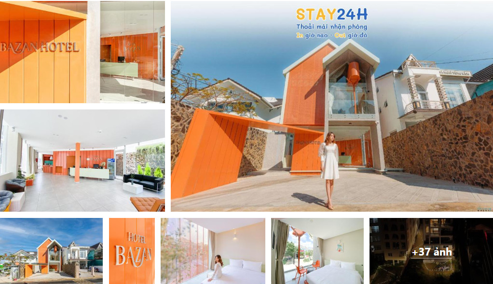
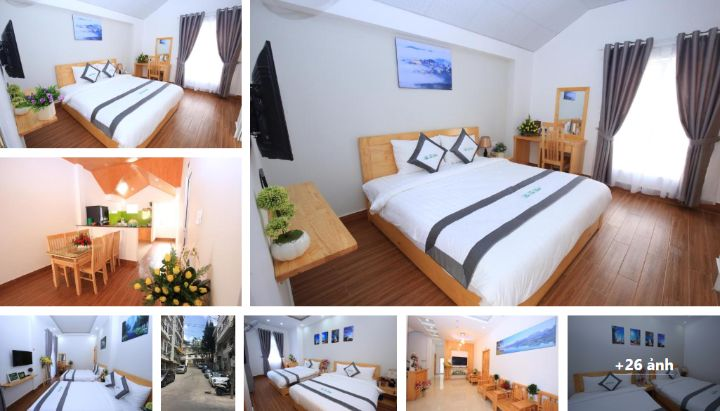

Khái niệm:
- Công nghệ thông tin (CNTT) được xem là ngành học “mũi nhọn” và tiên phông trong thời đại số. các doanh nghiệp và tập đoàn đua nhau “săn đón” nhân lực CNTT,
tạo nên sự quan tâm và mong muốn học ngành này ngày càng tăng cao.
- Ngành Công nghệ Thông tin (CNTT)
đang trở thành một yếu tố quan trọng và không thể thiếu trong cuộc sống hiện đại.
Những yếu tố như:
- Phát triển kinh doanh và tối ưu hóa hoạt động:
-
Tạo cơ hội mới và cải thiện sản phẩm/dịch vụ:
-
Tương tác và kết nối:
-
Bảo mật thông tin:
-
Nâng cao chất lượng cuộc sống:
Trường Cao Đẵng Kỹ Thuật Công Nghệ Nha Trang
Kỹ thuật sửa chữa & lắp ráp Máy Tính: Hành trang cho sự đồng hành
Cung cấp khái niệm và kỹ năng phân tích và xác định vấn đề phần cứng,
thay thế hay sửa chữa các linh kiện bị hỏng, thành thạo lắp đặt và kết nối
các thành phần máy tính, sử dụng các công cụ chẩn đoán
để xác định nguyên nhân sự cố và bảo trì định kỳ.


Cung cấp khái niệm và kỹ năng thiết kế giao
diện (UI) và trải nghiệm người dùng (UX), lập trình website với HTML, CSS,
JavaScript hay các công nghệ React, NodeJS, ASP.NET Core,
lập trình trên các thiết bị di động với React Native.
Cung cấp các khái niệm, nguyên tắc và kỹ
năng cơ bản nhất trong lĩnh vực Công nghệ thông tin
như cấu trúc, hoạt động của máy tính, phần mềm,
phần cứng, hệ điều hành, cách máy tính kết nối với
nhau và truyền tải thông tin qua mạng, viết mã chương trình.



Với đội ngũ giảng viên chuyên nghiệp (100% thạc sỹ
chuyên ngành, trình độ Anh văn B1 Cambridge trở lên),
hơn 9 phòng thực hành trang bị cơ sở vật chất hiện đại.
Khi học nghề Công nghệ thông tin, chúng tôi sẽ trang bị
các bạn bộ kiến thức và kỹ năng đáp ứng nhu cầu thị trường lao động.
Trong năm nhất: các bạn sẽ được cũng cố kiến thức nền tảng của ngành CNTT như
( ngôn ngữ C, python, cấu trúc dữ liệu và giải thuật, thiết kế và quản trị website…)
Năm hai: các bạn sẽ được đi thực tập cơ bản và thực tập doanh nghiệp. Đấy sẽ
là lúc mà các bạn sẽ được trải nghiệm môi trường làm việc thực tế, đúng
chuyên môn và tạo cơ hội làm việc khi ra trường cao.
Năm ba: là lúc quyết định cho tương lai mõi người, trước khi ra trường các bạn
sẽ trải qua 2 lần thực tập nâng cao và tốt nghiệp. Đây chính là lúc các
bạn chọn cho mình nơi làm vc sau khi ra trường.
Sau khi tốt nghiệp, sinh viên không chỉ nhận được bằng
kỹ sư thực hành mà còn mở ra cánh cửa đến thế giới công việc hấp dẫn như phân
tích và thiết kế hệ thống, lập trình ứng dụng, thiết kế và lập trình web. Tỉ lệ có việc làm sau khi ra
trường là 96%, và có cơ hội liên thông lên đại học.
Cơ Sở Vật Chất - Môi Trường Học Tập Tối Ưu
Với hơn 9 phòng máy tính hiện đại, chúng tôi mang đến môi trường học tập tiên tiến
theo tiêu chuẩn cấp quốc gia và quốc tế. Các phòng thực hành độc đáo, từ phòng sửa chữa
đến phòng dự án GIZ, đều được trang bị với công nghệ hàng đầu,
hỗ trợ sinh viên rèn luyện kỹ năng thực tế.
Thời gian đào tạo
-
Công Nghệ Thông Tin: Định Hình Tương Lai
-
Cao Đẳng: Với thời gian đào tạo 2.5 năm, chương trình dành cho những ai
đã tốt nghiệp THPT, hứa hẹn là hành trang chính để bước vào thế giới đầy thách
thức của Công nghệ Thông tin.
-
Trung Cấp: Đối với những người có nền tảng THCS, thời gian đào tạo là 1.5 năm,
mang đến cơ hội học tập và phát triển kỹ năng nhanh chóng. Điều tuyệt vời là
được miễn học phí.
Phương thức tuyển sinh
-
Chúng tôi tin rằng sự đa dạng là nguồn lực quý báu, vì vậy, phương thức xét
tuyển đã được lựa chọn để tạo cơ hội công bằng cho tất cả những người có
đam mê và năng lực thông qua hình thức xét tuyển học bạ THCS, THPT.
- ĐĂNG KÝ TUYỂN SINH TRỰC TUYẾN TẠI ĐÂY:
tuyensinh.cdktcnnt.edu.vn
Kết Luận
- Trong thời đại hiện nay, nếu bạn đang tìm kiếm sự đổi mới, sự sáng tạo và cơ hội
nghề nghiệp không giới hạn, hãy đặt chân đến trường chúng tôi. Ở đây, chúng tôi không
chỉ đào tạo mà còn nuôi dưỡng niềm đam mê và sự sáng tạo, biến những ước mơ kỹ thuật thành
hiện thực. Hãy đăng ký ngay để trở thành một phần của cộng đồng người chinh phục thách thức kỹ
thuật và định hình tương lai.